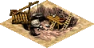
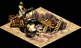
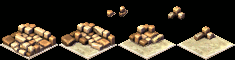
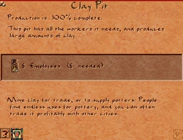

Clay Pit


The Clay Pit is a raw-material extractor: it digs clay out of clay deposits along the Nile and ships it to workshops. Clay is the raw input for two of the city's earliest industries — the Pottery Workshop (clay → pottery) and the Bricks Workshop (clay → bricks).
Like floodplain farms, a Clay Pit must sit on low ground beside the river, so it is swamped during the annual flood: while the Nile is in inundation the pit stops working, and a flooded pit cannot be demolished until the waters recede.
It is a 2×2 building and, like all extraction industry, it lowers the desirability of its surroundings — keep it well away from housing you want to evolve.
Clay Pit
- Cost (Normal)
- 30 Db
- Cost by difficulty
- VE 8 · Easy 15 · Normal 30 · Hard 50 · VH 100
- Labor category
- Industry & Commerce
- Terrain
- Clay deposits, near water
- Produces
- Clay
- Fire / Damage risk
- None / Low
Output

Each batch of clay is carried by a cartpusher to a Storage Yard, then drawn from there by a Pottery or Bricks workshop.
Overview
Clay was the foundation of everyday Egyptian craft — the material for pots, jars, and sun-dried mud bricks. In the game the Clay Pit is one of the very first extraction buildings a city builds, because the goods it feeds (pottery and bricks) are needed both for housing to evolve and for the earliest brick monuments.
The pit works the clay deposits that appear on the riverbank — visible on the resource overlay. Diggers extract clay continuously while the pit is staffed and the deposit beneath it still holds clay; a cartpusher then carries each finished load away to storage.
Mechanics
Digging clay
While the pit is staffed it searches the tiles under its footprint for the richest clay deposit and digs there, producing raw clay and depleting that deposit as it goes. Clay deposits are a finite map resource: if the ground beneath the pit runs dry, output stops even though the building is otherwise healthy. Place the pit over the thickest clay you can find.
The flood
Because clay sits on low riverbank ground, the Clay Pit is caught by the annual inundation. When the flood reaches it the pit is swamped: its workers are sent home, production halts, and it switches to a flooded sprite. A flooded pit cannot be demolished until the water recedes. With the optional collapse-cost rule enabled, a swamped pit also triggers a 250 Db disaster expense. Once the flood passes the pit returns to work on its own.
Output rate & staffing
Production speed depends on how fully the pit is staffed — a fully manned pit digs at its base rate, and output falls off as the worker percentage drops. Keep the pit connected by road to a housing block with spare labor, or it will throttle down.
Risks
The Clay Pit carries essentially no fire risk and only a low collapse (damage) risk, so it needs little fire-marshal or architect coverage compared with most industry. Its real hazard is the flood, not fire.
Production chain
Clay Pit → digs raw clay↳
Storage Yard → stockpiles clay↳
Pottery Workshop → pottery (housing evolution & export)↳
Bricks Workshop → bricks (brick monuments & walls)
Every leg runs on roads: clay is carried from the pit to a Storage Yard, and from there the Pottery and Bricks workshops draw it as they need it. One clay pit is enough to keep a single workshop fed; if your workshops idle for lack of clay, add pit capacity or a second pit on another deposit. Clay can also be imported over a trade route when no local deposit is available.
Info window
Right-clicking the pit opens its info window, showing the workers employed, how much clay is in stock, and whether the pit is currently flooded or producing. It is the quickest way to spot a pit that has run its deposit dry or been caught by the flood.

Tips
- Build the Clay Pit before its workshops — a Pottery or Bricks workshop with no clay just sits idle and wastes its workers.
- Site the pit over the thickest clay deposit (check the resource overlay); deposits are finite and a thin one will run dry.
- Expect the pit to stop every year during the flood. Plan a small clay buffer in a Storage Yard so workshops keep running while the pit is swamped.
- Keep the pit close to a Storage Yard and its workshops to keep cartpusher trips short; long hauls slow the whole chain.
- Industry drags desirability down (−3, fading over 2 tiles). Keep clay pits on the industrial, riverside edge of town, away from housing you want to evolve.
- No local clay? Set up a clay import route instead — workshops will draw imported clay from the Storage Yard just the same.
Developer reference
All paths relative to the repository root.
Building config — src/scripts/building/config.js
src/scripts/building/config.js defines building_clay_pit with its clay output, production rate, terrain need, and risk profile. The cost array is indexed by difficulty (VE · Easy · Normal · Hard · VH).
building_clay_pit {
output { resource : RESOURCE_CLAY }
progress_max : 200
production_rate : 100
building_size : 2
labor_category : LABOR_CATEGORY_INDUSTRY_COMMERCE
cost [ 8, 15, 30, 50, 100 ]
desirability { value[-3], step[1], step_size[1], range[2] }
laborers[8] fire_risk[0] damage_risk[1]
needs { nearby_water : true } // must be placed beside the river
flags { is_extractor: true, is_industry: true }
info_sound : "Wavs/clay.wav"
meta { help_id: 92, text_id: 121 }
}C++ implementation — src/building/building_clay_pit.h / .cpp
src/building/building_clay_pit.h declares building_clay_pit (inherits building_industry), registered with BUILDING_METAINFO(BUILDING_CLAY_PIT, …). Its sound channel is SOUND_CHANNEL_CITY_CLAY_PIT. Notable overrides in building_clay_pit.cpp:
update_production()— scans the footprint for the richest clay tile viamap_get_clay(), runs the sharedbuilding_industryproduction, then depletes that deposit withmap_clay_deplete()by the progress gained. Stops if no clay remains under the pit.on_before_flooded()— setsdestroy_reason = e_destroy_flooded, zeroesnum_workersand progress; withgameplay_change_random_mine_or_pit_collapses_take_moneyenabled it emits a 250 Dbevent_finance_request.spawn_figure()/update_production()— early-return while flooded, so a swamped pit dispatches no cartpushers and produces nothing.update_graphic()— shows the"flooded"animation while swamped, otherwise the normal work animation;draw_ornaments_and_animations_height()stacks the clay-pile sprite by stored amount.is_deletable()— returnsfalsewhile flooded, so the player cannot demolish a swamped pit.get_fire_risk()— halves the configured fire risk whengameplay_change_fire_risk_clay_pit_reducedis enabled.